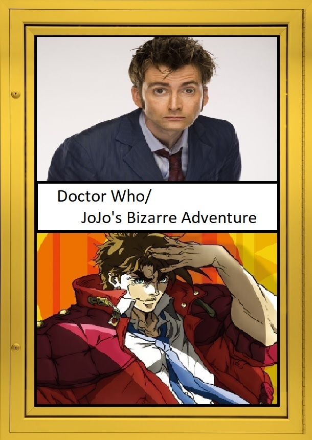

A new season of DOCTOR WHO is arriving on BBC soon and while some people are excited for it, I, on the other hand, have moved on since Steven Moffat took-over as showrunner. Fortunately, for the past several years, I've been indulging myself in another long-running show: JOJO'S BIZARRE ADVENTURE. While the show itself is a little more recent than DOCTOR WHO, it has a rich history that spans all the way back to the '1980s. JoJo has a lot of qualities that fans of DOCTOR WHO would greatly appreciate, which is why: If You Like DOCTOR WHO, Then You'll Love JOJO'S BIZARRE ADVENTURE.
JOJO'S BIZARRE ADVENTURE was originally a comic book published in 1987 by Hirohiko Araki, which is still going strong to this day. In 2012, it was re-adapted into a series by David Production (an animation studio). The show depicts the crazy and unbelievable adventures of the Joestar family bloodline starting from the '1880s, all the way to present day and more than likely beyond that. While Doctor Who is more or less, divided by how long each incarnation of The Doctor lasts, JoJo's is divided between story arcs instead, while also introducing new characters in each one.
The JoJo fan base refer to these story arcs as "parts", there are currently eight parts in the original source material, while David Production has only re-adapted four of them. The first four include PHANTOM BLOOD (1), BATTLE TENDENCY (2), STARDUST CRUSADERS (3), which is recognized by most fans as the most iconic part of the series and DIAMOND IS UNBREAKABLE (4). The time-span between most arcs differs and sometimes even the setting of which the story takes place, at one point it may take place in one location and then the next, it may take place in several. The way each arc unfolds is always different, never using the same story twice, sometimes the story will even include more than one JoJo from time to time. Moments like that may remind some Whovians of the TV special THE DAY OF THE DOCTOR in which several incarnations of the titular hero were able to share screen-time together (also, the second JoJo, Joseph, has thing for running away). Lastly, while the theme for DOCTOR WHO is very much iconic, the beauty of JOJO's is that it always has a new opening theme for every arc, which adds a little more varitey than listening to different versions of the same song.
So, if any of these points have got you interested, you can check out all of JOJO'S BIZARRE ADVENTURE on Crunchy-Roll, it's a streaming service that specializes in all things anime.